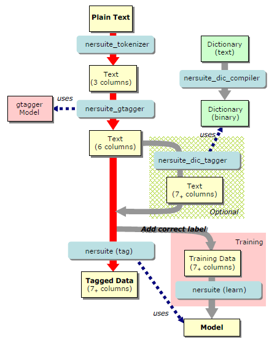

NERsuite
A Named Entity Recognition toolkit
Basic Usage
NERsuite is a composite system of co-operative commands. The following figure shows the overall command structure and the pipelined stream of data which runs through the commands.
Fig.1 Data flow structure of NERsuite
The main purpose of NE tagging is to find NE chunks of high probability with regards to the given NE model. The figure highlights this process in red arrows. In this page, we explain how to label a new input text with a pre-trained NER model. For training and using a new model, as well as for using external dictionary, please refer to the Advanced Usage page.
Tagging a New Input with a Pre-trained Model
We assume that NERsuite is installed and a proper pre-trained NER model is downloaded. In the following examples, we assume that the current working directory is [nersuite]/sample/.
Tokenizing a plain text
First, you need to prepare a text file to label. This is done by the Tokenizer command, namely, "nersuite_tokenizer". An input file must have one sentence per line. As a simple test, you can use test.txt file in the sample directory of the NERsuite source package. If you unzip the package under your home directory, the file will be placed at [nersuite]/sample/test.txt.
With an input file to label, you can run Tokenizer as follows.
$ cat test.tok
| ... | ... | ... |
| 8 | 10 | of |
| 11 | 14 | ZAP |
| 14 | 15 | - |
| 15 | 17 | 70 |
| 18 | 20 | to |
| ... | ... | ... |
The output consists of three columns; the beginning position of a token, the past
the end position of a token, and the token itself. Columns are tab-separated.
Adding Lemma Labels to the tokens
The GENIA tagger, "nersuite_gtagger", which is accompanied with the NERsuite package, performs lemmatization, POS-tagging and chunking. The output file of the Tokenizer will be used as an input to the GENIA tagger. To run the GENIA tagger, you need to use -d option to specify the directory where the GENIA tagger model files are stored. In the following example of running the GENIA tagger, we assume that you downloaded the zipped file of the GENIA tagger models in your home directory and unzipped it. Then the model files will be extracted into the ~/models/gtagger/ directory.
Loading morphdic...done.
Loading pos_models................done.
Loading chunk_models....done.
$ cat test.gtag
| ... | ... | ... | ... | ... | ... |
| 8 | 10 | of | of | IN | B-PP |
| 11 | 14 | ZAP | ZAP | NN | B-NP |
| 14 | 15 | - | - | HYPH | O |
| 15 | 17 | 70 | 70 | CD | B-NP |
| 18 | 20 | to | to | TO | B-PP |
| ... | ... | ... | ... | ... | ... |
Tagging the tokens
Lastly, the NERsuite main command "nersuite" labels the input text, which the GENIA tagger produced, with a pre-trained NER model. To run the command in tagging mode, use tag option and specify the model file as the command line's first argument. In this example, we assume that you downloaded a BioCreative 2 model in your home directory and unzipped it, so that you get the model file stored at ~/models/bc2gm/bc2gm.iob2.no_dic.mm.
$ cat test.ner
| ... | ... | ... | ... | ... | ... | ... |
| 8 | 10 | of | of | IN | B-PP | O |
| 11 | 14 | ZAP | ZAP | NN | B-NP | B-gene |
| 14 | 15 | - | - | HYPH | O | I-gene |
| 15 | 17 | 70 | 70 | CD | B-NP | I-gene |
| 18 | 20 | to | to | TO | B-PP | O |
| ... | ... | ... | ... | ... | ... | ... |
Pipelined Execution
The commands of NERSuite are all designed to enable for inputs and outputs to be combined with the pipeline mechanism of operating systems. For example, you can run these three steps (explained above) with the following single command line.
$ nersuite_tokenizer < test.txt | nersuite_gtagger -d ~/models/gtagger/ | nersuite tag -m ~/models/bc2gm/bc2gm.iob2.no_dic.m > test.ner